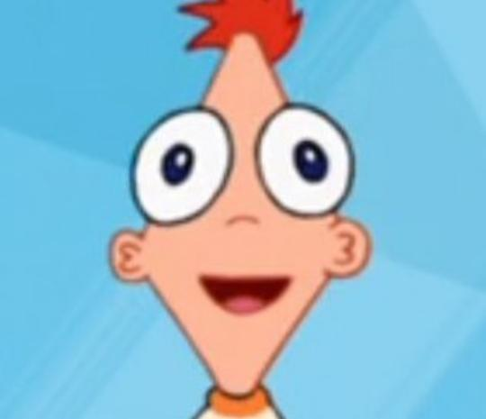
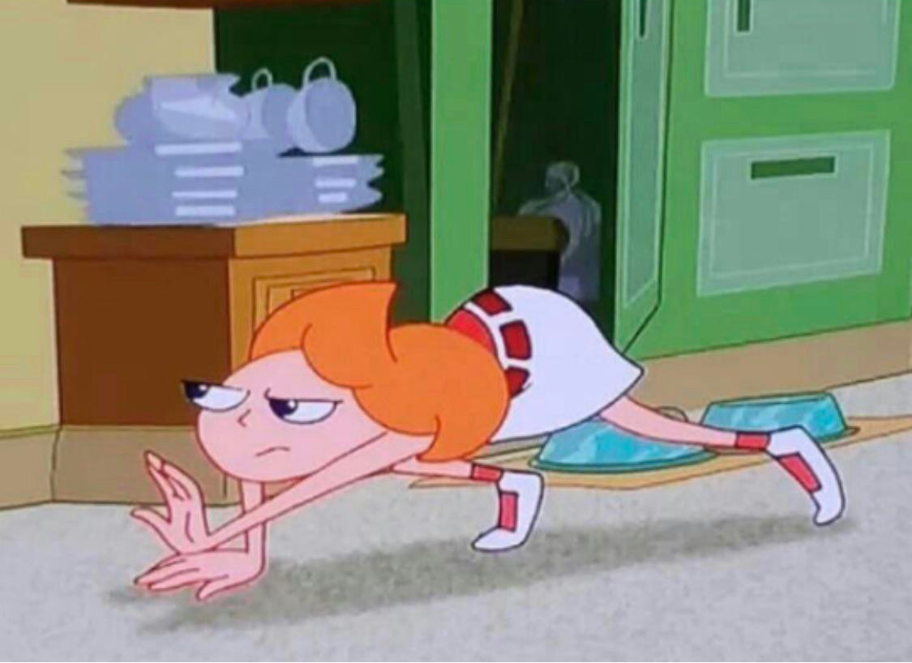
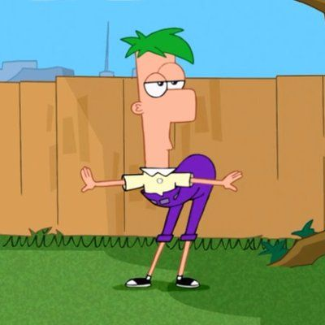
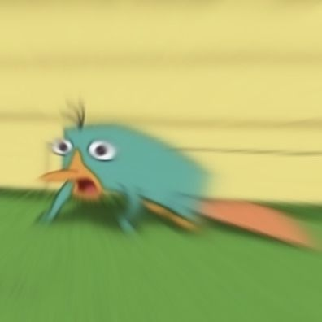

Duelo de Desenhos Animados | |||
| Phineas e Ferb | Pernalonga | Dora Aventureira | Irmão do Jorel |
|   |
| Phineas Phineas Flynn é um dos dois personagens-título da série animada de televisão Phineas e Ferb. Ele é dublado por Vincent Martella. Phineas, junto com seu meio-irmão quieto, mas inteligente, Ferb Fletcher, estrela o A-Plot da maioria dos episódios.
° sempre criando |
| Candace Candace Gertrude Flynn é a irmã de 15 anos de Phineas e Ferb e a mais velha dos filhos da família Flynn-Fletcher. Seu dia geralmente consiste em tentar dedurar seus irmãos e suas invenções para sua mãe, Linda Flynn, para eles ficarem de castigo. Quando não está de olho em seus irmãos, ela geralmente é vista falando em seu celular com Stacy e, às vezes, com Jenny, agindo como uma adolescente estereotipada.
° Candace faz de tudo para derrotar os irmãos, que estão sempre tramando algo ° Senpre tenta fazer com que a mãe pegue eles no flagra
|
|   |